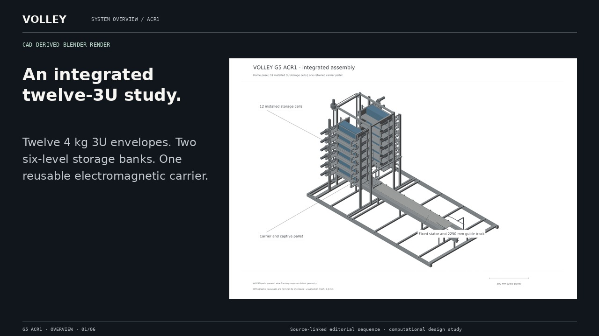
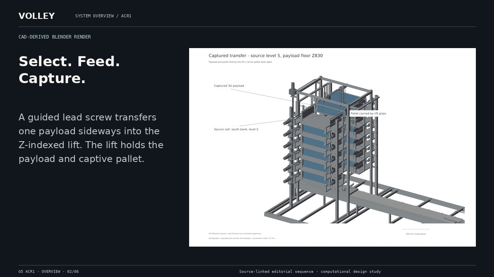
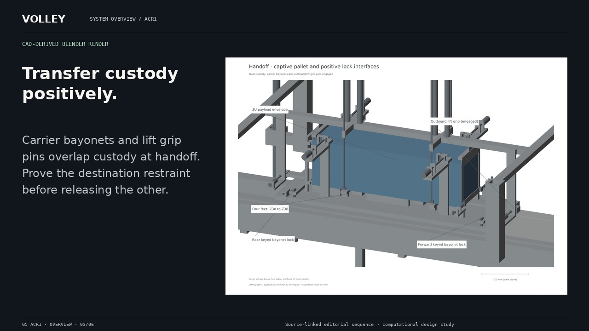
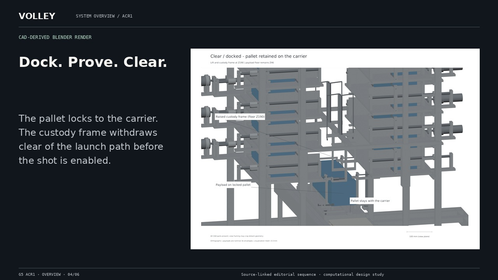
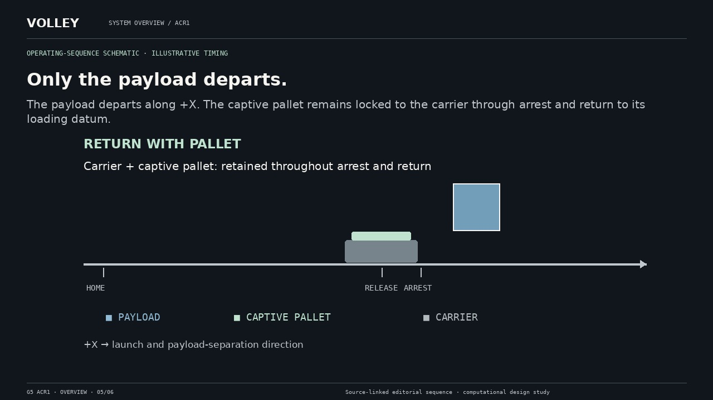
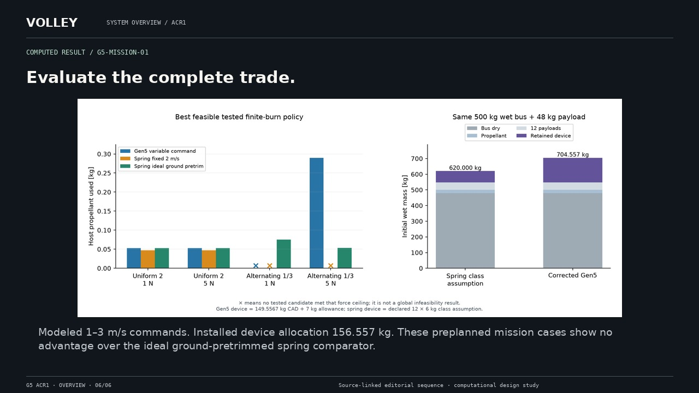

One path. Commanded departures.
A complete still alternative to video. The original full-resolution scientific figures and CAD view provenance remain available in the asset register.
Return to film · Read complete transcript


Twelve 4 kg 3U envelopes. Two six-level storage banks. One reusable electromagnetic carrier.
CAD-derived Blender render

A guided lead screw transfers one payload sideways into the Z-indexed lift. The lift holds the payload and captive pallet.
CAD-derived Blender render

Carrier bayonets and lift grip pins overlap custody at handoff. Prove the destination restraint before releasing the other.
CAD-derived Blender render

The pallet locks to the carrier. The custody frame withdraws clear of the launch path before the shot is enabled.
CAD-derived Blender render

The payload departs along +X. The captive pallet remains locked to the carrier through arrest and return to its loading datum.
Operating-sequence schematic · illustrative timing

Modeled 1–3 m/s commands. Installed device allocation 156.557 kg. These preplanned mission cases show no advantage over the ideal ground-pretrimmed spring comparator.
Computed result / G5-MISSION-01